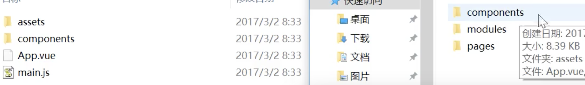

新做了一个vue项目，记录一下整个项目流程和用到的新的工具；
一、项目配置
1、使用vue-cli脚手架搭建1
指令：vue init webpack
2、项目中使用的技术栈为vue、vue-router、vue-resource、vuex、RAP+mockjs，所以在安装依赖包的时候需要将mock.js一同安装进去，指令为：1
cnpm install --save mockjs //默认使用淘宝镜像
3、本次开发中使用的开发工具为sublime Text3，安装了几个好用的插件，如
- Termnal,作用是侧边栏右键点击会出现“Open Terminal Here(在此处打开终端)”
- SideBarEnhancements,用来增强扩展侧边栏右键点击展开的功能菜单
- MarkdownLight,高亮显示markdown语句，非常推荐
- OminMarkdownPreviewer,在浏览器中预览markdown页面
4、本次使用chrome浏览器，安装vue-devtools扩展工具进行调试
5、接口管理平台和数据分别使用RAP和mock.js,这两个的出现对于前后端分离提供了很多帮助，主要是提供假数据。感兴趣的可以搜索查看官网。
二、项目结构搭建
1、脚手架模板，请参考上述第一条
2、项目目录结构的修改
通过vue-cli下载下来的模板为一个单页面应用，但在实际开发中，我们大多数使用的都是多页面，所以将src目录结构修改为：

分别用于存放组件、模块、页面
三、vue生命周期钩子
1、new Vue()【实例化】->Observe Data【数据检测和监听的配置】->Init Events(初始化事件)【绑定在DOM模版上的数据监听】
2、beforeCreated()在new Vue()和Observe Data之间执行